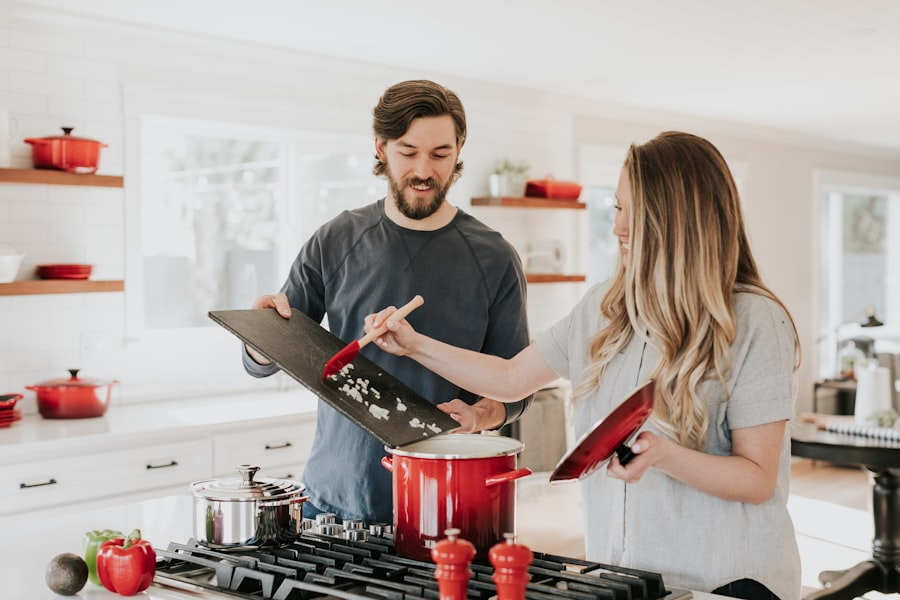

Harvest & Co.
About Us
Our story, our kitchen, our people.

Est. 2019 · Brooklyn, New York
Our Story
Harvest & Co. began as a conversation between two friends at a kitchen table. A chef who believed the best meals started at dawn, and a host who believed the best rooms made strangers feel like neighbours. In 2019, they found a sun-drenched corner in Boerum Hill and decided to build something together.
From the very first morning, the idea was simple: serve food that is honest, seasonal, and carefully made. No shortcuts. Eggs from upstate farms. Bread baked before sunrise. Coffee sourced from independent roasters and brewed with patience. We change our menu with the seasons so that what lands on your plate always reflects what the Hudson Valley and local markets are giving right now.
Five years on, the room has grown. New faces behind the counter, new dishes on the board, but the feeling has stayed the same. Harvest & Co. is a place where you can sit with a book and not be rushed, where the coffee is always hot, and where the people around you all somehow end up talking to each other. That, more than anything, is what we are here for.

Philosophy
Our Kitchen Philosophy
We cook with what is in season because it simply tastes better. Every morning our chef visits the market before service begins. Selecting whatever is at its peak, then building the day's menu around it. There is no rigid script in our kitchen, just a deep respect for good produce and the cooks who understand it.
Waste is something we think about seriously. Vegetable offcuts become stocks. Day-old bread becomes pain perdu. The compost feeds the herb planter outside our door. It is a small loop, but it matters to us and we believe it shows up in the food.
Explore Our Menu →The Team
The People Behind It
Our team is a mix of seasoned professionals and passionate first-timers, all bound by the same thing: a genuine love of feeding people well. Our head chef trained in Paris and Lyon before coming home to Brooklyn. Our barista has been competing in specialty coffee for six years. Our servers know the menu by heart and mean it when they ask how you are.
We invest in our people because the experience in the room is inseparable from the food on the plate. Every person who walks through the door should feel looked after — not as a transaction, but as a guest in someone's home.
Come Visit Us →